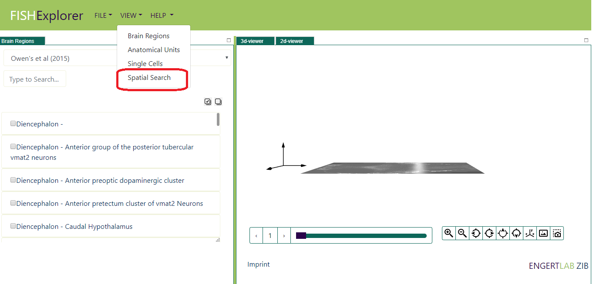
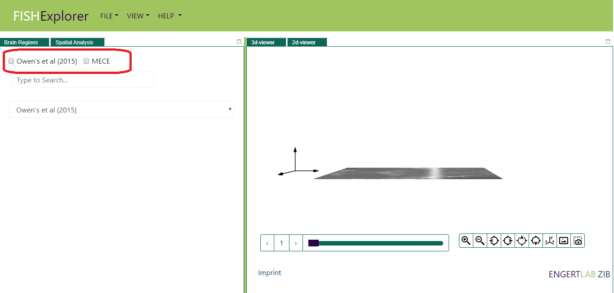
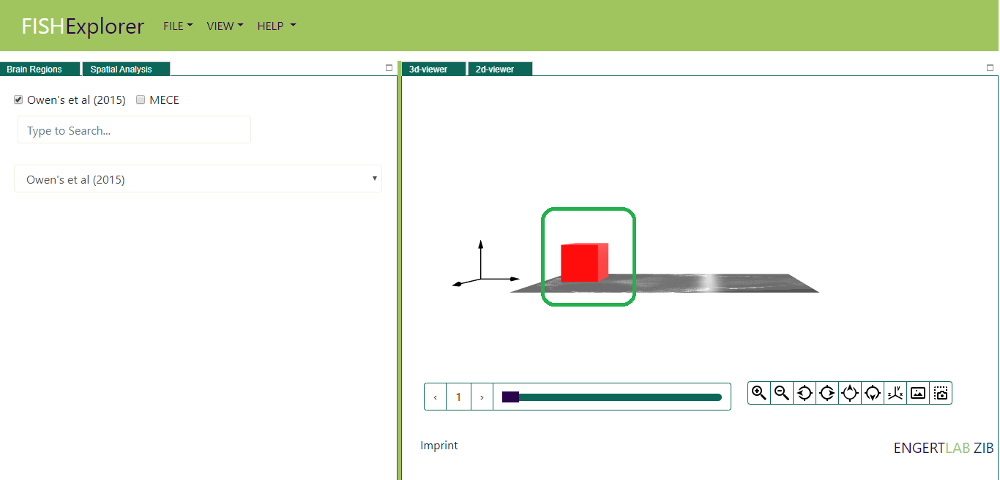
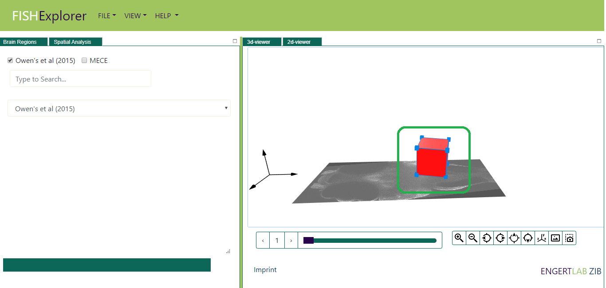
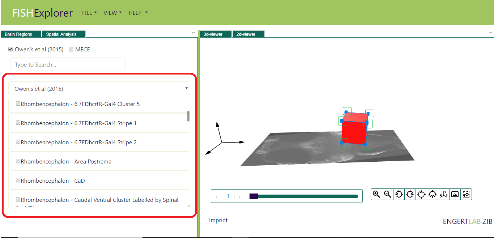
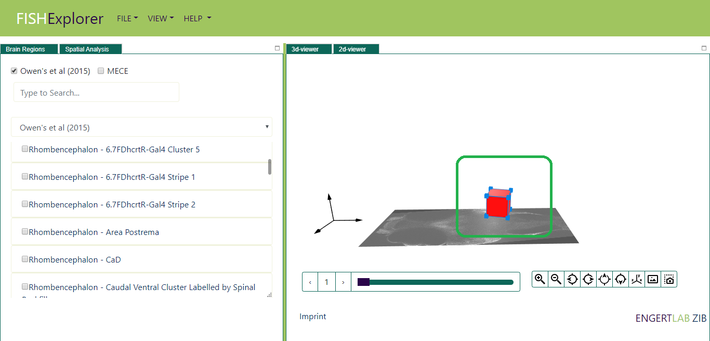

Spatial Queries
-
This section provides a step-by-step introduction to spatial analysis of zebrafish.
Biologists often want to examine sub-volumes of the zebra fish brain more closely,
e.g. find the brain regions therein, and also find neurons of a certain type in this region
Follow the steps below to perfom spatial analysis of zebrafish brain regions: - When FishExplorer is running, a default window like the one shown below appears on the screen.

- Click the view button (encircled red in the image above), a list of viewers like the one shown below appears on the screen.

- Click the "Spatial Search" tab (encircled red in the image above). Then a spatial search viewer, like the one shown below, appears on the screen.
User can perform spatial search on both Owen's et al (2015) regions and MECE Hierarchy.

- Check the checkbox in front of Owen's et al (2015) (encircled red in the image above), volumetric box will appear in 3D-viewer
on the screen (encircled green in the image below). Users can disable the spatial search using the same and
volumetric box will disappear from the screen.

-
Next, drag the volumetric box to any new position on the slice. For example,
we dragged the box towards the hindbrain of the zebrafish (encircled green in the image below).
Once the drag ends, the spatial search will start automatically (encircled red in the image below).
The user will not able to further drag the box till the spatial search ends.

-
Once the spatial search ends, the list of brain regions which are “Overlapping or Within” volumetric
box will appear on screen (encircled red in the image below).

-
Next, user can increase or decrease the size of volumetric box by dragging the 8 blue colored
interactors on the boundary of the box (encircled green in the image below). For example,
we decreased the size of volumetric box using one of the marker (encircled green in the image below)
.
